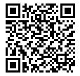

A USB stick that turns a computer you already own into an offline Bitcoin signing device. While it is running, that machine cannot go online and cannot see its own hard drives. Switch it off and everything you did is gone.
SignerOS starts from a USB stick and runs entirely in the computer's memory. It has no way to reach the internet, no way to touch the machine's hard drives, and nowhere to keep a history. The only place it can save anything is the stick you booted from, and the only things it saves there are files that are safe to share — a signed transaction, or the public keys your everyday wallet needs to watch your balance. Switch the power off and the session, your recovery words included, is gone.
See the signing ritual ↓There is nothing to switch off and nothing to remember to switch off. The ability to use a network was left out of this system entirely, so Wi-Fi, Ethernet and Bluetooth do not merely fail — they are not there. Plugging in a cable does nothing at all, and neither would a program that somehow got onto the stick and wanted to phone home.
The whole system lives in memory and never installs itself. It cannot even see the hard drives of the machine you borrowed — your Windows or Linux installation is invisible to it, so it cannot be read, changed or infected. Nothing you do is written anywhere except, when you ask for it, one file on your own stick.
The stick boots straight into the signer and there is nothing else on it: no desktop, no browser, no file manager, no command line, no way to install anything. Fewer moving parts means fewer places for something to hide — and a much smaller amount of code for anyone to check.
Any reasonably modern PC with a USB port becomes a signer for as long as it is switched on — an old laptop is ideal, and it does not need to be a good one. Take the stick out, start the machine normally, and it is as if SignerOS was never there.
There is one app on the stick and its first screen offers exactly those three choices. Below is a walkthrough of each one, screen by screen, with the same headings, buttons and warnings you will see on the machine. It is a redrawing rather than a photograph — but the words are the real ones, and so is everything else on it: the wallet shown is a famous test seed (abandon … about) that has been public for years and holds nothing, so every key and address here is genuine and anyone can check it.
▸ “CREATE A NEW WALLET”
This machine will generate a seed and show you the recovery words once. The words are never written to the USB stick, to this machine, or to anywhere else. There is no backup, no copy and no recovery service.
Anyone who reads those words owns everything the wallet will ever hold. Anyone who cannot read them — including you, if you lose the paper — has lost it permanently.
The only file that will be written is a watch-only one: the public keys your everyday wallet needs to see this wallet's balance and prepare payments for it. It cannot spend anything.
▸ HOW MANY WORDS
// Both lengths are far beyond anything anyone can guess — nobody has ever broken a properly generated 12-word seed. 24 is the convention for large, long-lived holdings; 12 is meaningfully easier to write down without making a mistake, and a copying error is a real risk where guessing is not.
▸ “WHERE YOUR SEED COMES FROM”
// A wallet is exactly as safe as the randomness it was made from, so this screen does not rely on any single source of it. It mixes four together — including your own hand moving the mouse, which is the one source no software anywhere can watch. Only one of the four has to be unpredictable for the result to be safe, and if the machine cannot offer a source it trusts, it refuses to generate at all rather than asking you to decide.
▸ WHAT THE SCREEN REPORTS
143 of 256 movements collected.
▸ “WRITE THESE 12 WORDS DOWN, IN ORDER”
// On paper, not on a phone and not in a photograph. This is the only copy that will ever exist — the machine keeps none, and neither does anybody else.
▸ “NOW TYPE EVERY WORD BACK”
word 8 of 12: aban_
7 of 12 words entered and correct so far.
// The words are hidden here on purpose: you are meant to be copying from your paper, and a readable screen would let you copy from that instead while believing you had checked the paper. A word that stops matching turns red straight away, while it is still in front of you, and you fix it where it stands — going back to word 3 costs you word 3 and nothing else. If your handwriting is genuinely ambiguous, Show the words again is always there and does not throw away what you have typed.
▸ “ADD A PASSPHRASE? (OPTIONAL)”
// A passphrase is a 25th word of your own choosing. The same recovery words with a different passphrase are a completely different wallet, with different addresses and a different balance. It protects you against someone who finds your written words — and destroys the wallet if you forget it, with no way to recover or reset it. Leave it empty if you are not certain you want one; most wallets have none.
▸ PASSPHRASE — SHOWN ON SCREEN, TYPED TWICE
// It is shown rather than hidden behind dots because the machine treats every keyboard as a US one. On a Turkish-Q or a German layout the punctuation keys land somewhere else, so what gets typed is not what is printed on your keys — and nothing, anywhere, will ever tell you afterwards. Seeing the characters catches that; typing it a second time catches an ordinary slip, which no amount of looking will.
▸ “WHAT WILL BE WRITTEN TO THE USB STICK”
// This is the whole of what leaves the machine, and there is nothing in it that can spend. It covers all four address styles a wallet might use, and prints the keys in both of the shapes wallets ask for, so you copy the one line your wallet wants — Sparrow takes the first, Blockstream Green wants the pair underneath it. The file also shows you the first address of each style, which is what you check against your wallet after importing.
▸ NAME THE FILE
written to the USB stick
type to change the name · Enter accepts it
// Every file this machine writes, you name. The dated name is only the suggestion, so pressing Enter is still the whole interaction — and if a file of that name is already on the stick you are told, rather than having the old one quietly replaced.
The file is on your USB stick. The recovery words have been erased from the machine's memory — your paper is now the only copy in existence.
// Use Secure shutdown and wait for the machine to switch itself off before pulling the stick out. That is what makes sure the file is really written, and what wipes the leftovers of your key out of the memory.
▸ “TYPE YOUR RECOVERY WORDS” — HOW MANY WORDS
▸ THE SAME GRID, SHOWN IN CLEAR
// Here your paper is the source, so the words stay readable — Hide covers them if you are not alone in the room. Recovery words come from a fixed list of 2048, and anything you type that is not on that list is outlined in red the moment you type it, so a slip is caught on the spot instead of at the end.
▸ PASSPHRASE — A CLICK OR F3 MOVES THE TYPING HERE
▸ REVIEW — BEFORE ANY FILE EXISTS
▸ THE FIRST ADDRESS OF EACH ADDRESS STYLE
// This page is the whole point of this flow, and it appears before any file is written. A mistyped word gets caught by the machine itself, twice over. A mistyped passphrase never does — any passphrase is a valid one, so the wrong one quietly gives you a different, perfectly normal, empty wallet. So compare what is on this screen against the wallet you already have. If the fingerprint and the first address match, you typed everything correctly. If they do not, nothing has been written and you can simply go back.
// The numbered buttons are there for the same reason. Most people want the first one; if your existing wallet is a later one, step through until the address matches.
▸ NAME THE FILE
written to the USB stick · type to change the name · Enter accepts it
Exactly the same file creating a wallet would have produced — where the words came from makes no difference to it. Your words, and the key worked out from them, were erased from the machine on the way out of this screen.
▸ “CHOOSE A TRANSACTION TO REVIEW”
// These are the transaction files you copied onto the stick, and they are all the machine looks at — it does not open anything else on it, and nothing on the stick can be run as a program no matter what it claims to be. You can plug the stick in after starting up; it appears here within a second or two.
▸ “REVIEW BEFORE SIGNING” — SUMMARY
// Every recipient is listed underneath with its full address and amount. Read them the way you would read a receipt: this machine can tell you exactly what the transaction does, but it cannot know which address you meant — check that against something you trust.
// Notice what is not claimed yet. Until you enter your key, the machine has no way to know which of these addresses is your own change, so it says so rather than guessing. Money that looks like it is going to a stranger and money coming back to you are worth being sure about.
// If the file does not contain enough information to work out the fee, SignerOS refuses to sign it and tells you what to ask your wallet for. It will not estimate, and there is no way to override it — a transaction whose fee you cannot see is one that can quietly pay your balance to a miner.
▸ “ENTER YOUR KEY TO SIGN”
▸ BOTH FIELDS ON SCREEN — A CLICK OR F3 MOVES THE TYPING
// Your words go straight into a protected area of memory that is erased the moment it is finished with, and they are never held anywhere else — not in a file, not in a log, not in a temporary copy. Both fields are visible at once on purpose: a passphrase hidden behind a button is a passphrase people forget they had.
▸ “CONFIRM WHAT YOU ARE ABOUT TO SIGN” — THE LAST SCREEN
▸ WHERE THE MONEY GOES
// The transaction file gets to claim which address is your own change. Believing that claim would mean whoever handed you the file also decides which address this screen paints green as "coming back to you" — and you would then approve the loss yourself, having read the screen correctly. So the machine works the address out from your key instead and only calls it change when the two agree exactly. If a file claims your change on an address your key does not produce, signing is blocked. Not warned about — blocked.
▸ IT SIGNS, ERASES YOUR KEY, THEN ASKS WHAT TO CALL THE FILE
written to the USB stick
// Your key is already gone by the time this page appears, so nothing secret is sitting around while you pick a name — and if the write fails, you can just try again from here. The file you brought in is never altered; the signature is written alongside it as a new file.
The signed file is on the stick, next to the one you brought in. Carry it back to your everyday machine and broadcast it from there. It is the same transaction you just approved — signing changed nothing about it except adding your signature.
// Shut down and wait for the machine to switch off before pulling the stick out.
◆ These are redrawings of the real screens, not photographs and not a working app — nothing on this web page can generate a key or sign anything. The wallet is a well-known public test seed that holds no money, and the transaction is the one shipped with the project for testing, so every address and amount above is a genuine value rather than a made-up one.
Your everyday machine prepares the transaction; the offline machine approves it. The only thing that travels between them is a file on a USB stick — the SignerOS stick itself does fine. There is no camera and no QR scanning here, and nothing that crosses ever contains a secret.
In your everyday wallet, build the payment as usual and save it as an unsigned transaction file instead of sending it.
ONLINE PCCopy that file onto the stick. Any name will do as long as it ends in .psbt. Nothing on this stick is secret at any point.
Start the offline computer from the stick. The app lists the transaction files it finds and you pick the one to look at.
SIGNEROSWho gets paid, how much, and what the fee is — all worked out from the file itself rather than taken on trust. Read it like a receipt.
SIGNEROSType your recovery words. The machine shows you one last summary in plain terms — what is really leaving your wallet, what is coming back — you confirm, and it signs. Your key is erased immediately afterwards.
SIGNEROSThe signed file is saved next to the original, which is left untouched. Use Secure shutdown and wait for the machine to switch off before pulling the stick out.
SIGNEROSTake the stick back to your everyday machine and send the signed transaction from there. Done — nothing secret ever left the offline machine.
ONLINE PCSignerOS can hold the single key to a wallet — or be one signature of several, alongside a hardware wallet you already own. The same stick does both: it hands your everyday wallet the public keys it needs, and signs whatever that wallet passes back. The third tab is the multisig case done concretely rather than described: two SignerOS seeds into one 2-of-2 in Sparrow, a payment signed twice, and broadcast.
Your everyday wallet, set up from the public keys SignerOS exported. It can watch your balance and prepare payments — but it cannot send one.
Your personal computer, booted from the SignerOS USB. Reviews and signs. Never online — it has no way to be.
One key, kept offline. Only the offline machine can approve a payment, and only while it is switched on. Everything else stays an ordinary, everyday computer.
Software like Sparrow puts the three devices' public keys together into one wallet, prepares the payment, and collects signatures until it has enough.
Key #1. A personal computer booted from the SignerOS stick.
Key #2. A second, separate personal computer — ideally kept in another place.
Key #3. Any hardware wallet that can sign transaction files completes the trio.
Any two of the three. Two signatures approve a payment, so one lost key is survivable and one stolen key is useless on its own. One thing to know: with a setup like this, your recovery words alone are not enough to get your money back — you also need the file that describes the wallet, including the other two devices' public keys. Back that file up somewhere alongside your words. It cannot spend anything, so keeping copies of it is safe.
The smallest multisig there is, done once from end to end: two SignerOS wallets joined into one 2-of-2 in Sparrow, a payment signed on one machine and then on the other, and broadcast from the everyday one. Every step below is either a menu in Sparrow or a screen on the stick — nothing else is involved, and nothing secret moves between them.
▲ 2-of-2 needs both keys for every payment, so it survives neither a lost key nor a forgotten passphrase. It is the clearest one to learn the mechanics on, and it is a fine arrangement for a joint account where both parties must agree. For savings you keep alone, build the 2-of-3 in the previous tab instead — same steps, one more key, and one of them may be lost.
Run Create a new wallet once on each of the two machines — or twice on the same one, in two separate sessions, if you are only trying this out. Each run gives you a set of recovery words to write on paper and one watch-only file on the stick. That is two sets of words and two files, and from here on everything depends on knowing which is which.
Name them apart as you save them — signer-a.descriptors.txt and signer-b.descriptors.txt will do. Each file's header carries a master fingerprint, eight characters that identify that seed and nothing else; Sparrow will show you the same eight later, which is how you check you pasted what you meant to.
Almost all of the export describes single-signature wallets, and none of that is what a multisig wants. Scroll past it, to the block at the very end headed MULTISIG COSIGNER KEYS (BIP48), and inside that to BIP48/2h — Native SegWit multisig (P2WSH). The line you want is the one that is not commented out: fingerprint, derivation path and public key in a single string.
Take the 2h block and not the 1h one underneath it: 2h is native SegWit, which is what you are about to build, and 1h is the older nested form — take that one only if some wallet explicitly asks for it. Copy the same line out of the second file. Two lines, one per seed, is the whole of what Sparrow needs; the rest of both files can be ignored for this.
Nothing here can spend. These are public keys, and they are meant to be handed to the wallet that coordinates the multisig — which is exactly what the next step does.
In the wallet's settings, set Policy Type to Multi Signature and Script Type to Native Segwit (P2WSH) — that is the same script type as the 2h block you just copied, and the two have to agree. Then set the threshold to 2 of 2.
Sparrow now shows one Keystore tab per cosigner: two of them, both empty.
Paste the whole line, brackets included. Sparrow reads the bracketed part and fills in the master fingerprint and the derivation path by itself. If your version leaves those two boxes empty, fill them from the same line by hand: the eight characters before the first slash are the fingerprint, and what follows is the path — m/48'/0'/0'/2'.
Check the fingerprint against the file it came from, both times. It is printed in the export's header and it is the one thing that tells you the key in front of you belongs to the seed you think it does. Give the keystores names you will recognise later — the machine, the room, whatever distinguishes them — because at signing time you need to know which words go with which.
Then Apply. Which key you put in which tab makes no difference: Sparrow's multisig wallets sort the keys before building addresses, so both orders produce the same wallet.
This is the step people skip and regret. In a multisig your recovery words are not enough to get the money back: you also need to know the other key, the threshold and the script type — which is precisely what this exported file records. It contains no private key and cannot spend, so keeping several copies of it is safe and losing all of them is not.
Do it now, while the wallet is empty and losing it would cost you nothing but the setup.
Send a small amount to an address from the wallet's Receive tab and let it confirm. (Sparrow needs its connection to a node or an Electrum server for this, and again to broadcast at the end — the online half of this arrangement is entirely ordinary.)
Sparrow will report 0 of 2 signatures. That unsigned file is what crosses the gap, and there is nothing secret in it.
Boot machine A from its stick, pick payment.psbt from the list, and read the review: who is being paid, how much, and the fee. Change is recognised here as it is in a single-signature wallet, because Sparrow puts the multisig script into the file and the machine re-derives the address from it rather than believing the label.
Type the first set of recovery words — and the passphrase, if that seed has one — confirm the summary, and sign. Name the result something that says what it is: payment-a.psbt. Then Secure shutdown, and take the stick out once the machine is off.
One signature of the two now exists. The original file is untouched next to the new one.
▲ Carry payment-a.psbt to the second machine — the file the first signing produced, not the original. Signing the original again would give you two separate files with one signature each, and neither of them can be broadcast.
Boot machine B, open payment-a.psbt, review it exactly as before, and type the second set of words. The first signature is carried through untouched and the second is added beside it. Save as payment-ab.psbt.
With the pair complete, SignerOS also writes a .tx file next to it — the finished transaction, ready to broadcast by any means at all. You do not need it if you are going back through Sparrow, and it is there for the case where you would rather not.
Sparrow reports 2 of 2 and offers Broadcast Transaction. Press it and the payment goes out. Both seeds approved it, neither one ever left the machine it was typed on, and every file that crossed the gap between them was public.
What you now have. Two sets of words, on paper, in two places — and one wallet file that describes how they fit together. All three are needed to recover, and none of them alone can spend a thing. Do the whole of the above on testnet or with an amount you would shrug at first: the point of a rehearsal is to find out which of the nine steps you misread, while it costs nothing.
There is a ready-made image, and it is the sensible way to try SignerOS this afternoon. But a file somebody else prepared is a signer you are trusting them with — and the checksum next to it was published by the same people as the file, so on its own it only proves the download did not get corrupted. Building it yourself is what settles the question: the build is designed so that everyone who compiles the same version gets a byte-for-byte identical result, which means you can check it against what we published. Download it today; build it before the wallet matters.
LATEST RELEASE
signeros-1.0.1-x86_64.img
▼ Download the imageAlso: every version and its release notes · the source code, which anybody is free to read.
What you get is a ready-made image of a complete USB stick — the startup files and the area your transaction files will live in are already in it. You do not format anything and you do not choose any settings; you write the image and the stick is done.
▲ The image we publish is not signed for Secure Boot, because that signature would have to be made with a key held by someone other than you. It boots with Secure Boot switched off. If you would rather leave Secure Boot switched on, build the image yourself with a key of your own — section 07 walks through it.
The quick check: that the file arrived intact and is the one that was published. Run one command and compare the result with this, character by character.
LINUX / MACOS
WINDOWS (POWERSHELL)
✕ Not the same? Delete the file and download it again. Never start a computer from an image you could not confirm.
Then be clear about what that proves: the file matches the number on this page. It does not prove the number itself is honest, because we published both. Only building it yourself settles that — which is the next step, and it is the one that makes this signer genuinely yours.
You need a Linux computer and some patience: everything is compiled from scratch, so the first run takes 30-90 minutes and later ones take minutes. You do not need the file you downloaded — this is the same source the released image was made from.
THE NUMBER THAT MATTERS
Check the file called bzImage rather than the disk image. That single file is the whole of what the machine actually runs, so agreeing on it is agreeing on everything. The disk image is deliberately not comparable: it carries a signature that differs for every person who builds it, so two honest builds of it never match anyway.
That number is published with every release, and two people on two different computers should get the same one. If yours comes out different, say so publicly — that is the check doing its job.
AND WATCH IT PROVE ITSELF
The first starts the real image in a simulated computer and puts it through the whole job: read a transaction, show it, sign it, save it — and refuse a transaction that lies about which address belongs to you. The second is the quick one, and it re-checks every signature with a second, completely separate implementation written from scratch for the purpose. Asking a program to confirm its own work proves nothing; two independent programs agreeing is evidence.
✕ This kind of check lets you find out that something was tampered with, by comparing with other people. It cannot prevent it. That is exactly why the comparison is worth actually doing rather than assuming.
The image is a picture of a finished stick, not a file you copy onto one. Everything is already inside it, so you do not format anything and you do not pick any settings — you write the image over the whole stick and it is ready. Unpack the download first if it arrived compressed.
If you have the source — because you built the image, or just downloaded the source — the script that writes the stick comes with it. It reads the make and size of the drive back to you and asks you to confirm before touching it, then writes the image and reads it back to check the stick is correct.
It writes output/images/signeros.img by default. For an image you downloaded instead, point it at the file:
--expand-data gives the rest of the stick over to your transaction files afterwards, which is what you want on anything bigger than the image itself.
balenaEtcher needs nothing but the image file: choose it, choose the USB device, press Flash. It handles this kind of image correctly and refuses to write over your computer's own disk — you just do not get the read-back check, or the leftover space handed to your files.
1 · Plug the stick in and find its device (e.g. /dev/sdb) — compare sizes to be sure:
2 · Unmount every partition on it:
3 · Write the image to the whole drive — the plain device name, with no number on the end (/dev/sdX, not /dev/sdX1):
4 · Flush and remove:
The stick now has two areas on it: the part that starts the computer, which nothing should ever touch, and a plain one named PSBT_DATA where your files go. Plain dd leaves the rest of the stick unused — the script above can hand that space to your files instead.
Download the image, or build it on Linux (or in WSL) and copy output/images/signeros.img across. Back up anything on the stick first; it will be wiped.
signeros.img.Use balenaEtcher instead: pick the image → pick the USB → press Flash. Three clicks, works on Windows and Linux, no settings to think about.
// Afterwards the stick shows up with a drive named PSBT_DATA on Windows, macOS and Linux alike. That is where your transaction files go — loose on it, not inside a folder. Whatever you do, do not reformat the stick “to fix it”: the part you would be erasing is the part that starts the computer.
Secure Boot is a setting in your computer's start-up menu that lets it run only software carrying a signature it has been told to trust. Out of the factory it trusts Microsoft and nobody else, and SignerOS is not signed by Microsoft — so you have two honest choices, and the first is better than it sounds.
// Now the machine runs your signer because you vouched for it, and it still refuses everything else. If you are a Linux user reaching for mokutil — that tool manages a different list and will not work here. It has to be done from the start-up menu.
THE SETUP KEY, BY MAKE
| Dell | F2 / F12 |
| Lenovo | F1 / F2 (or Fn+F2) |
| HP | F10 / Esc |
| ASUS | F2 / Del |
| Acer | F2 |
| MSI | Del |
// On HP machines, permission to start from a USB stick is a separate setting from Secure Boot, and both have to allow it. And SignerOS needs a computer made in roughly the last decade — very old machines start up in a way it does not support.
That same menu usually offers Clear All Secure Boot Keys right next to Enroll, and it does exactly what it says: it throws away the trust your own Windows or Linux installation depends on, and the machine stops starting up normally. Add yours to the list; do not replace the list. If you do press the wrong thing, Restore Factory Keys is in the same menu and undoes it — nothing here can permanently break a computer.
Some machines will not let you do this at all — a few hide the key menu until you set a password on the start-up settings, and a few only accept certificates in a form this project does not produce. On those, switching Secure Boot off is the answer. And it is worth knowing what the signature is actually for: it is what stops somebody who gets hold of your stick from quietly replacing what it starts up. Without it, that swap would go unnoticed — so either way, keep the stick somewhere you control.
The nicest way to try SignerOS end-to-end: make your very first signed transaction a small one to the donation address below. A few thousand sats is plenty — and it proves the whole loop works on your machine before anything that matters depends on it.

DONATION ADDRESS · BITCOIN ON-CHAIN
// Bitcoin on-chain only. Every sat is a thank-you — there are no tiers, no perks, just the project moving forward.